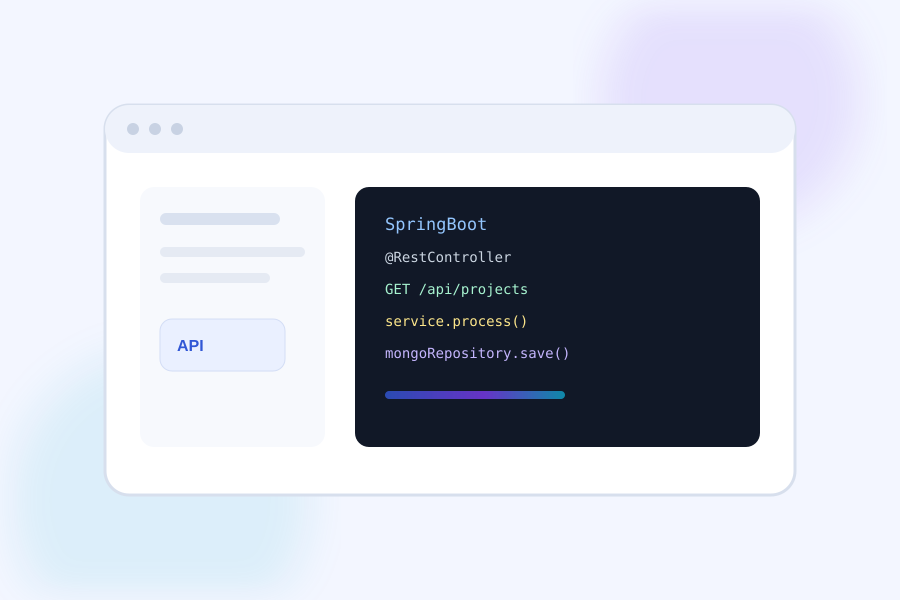

Product-minded
Comfortable understanding business requirements, client expectations and the practical trade-offs behind a feature.
Java & Spring Boot developer with ~4 years of hands-on experience across backend, frontend, databases, cloud deployment and production support. I build practical, maintainable web applications and enjoy working across the stack.

I am a full-stack developer who enjoys understanding the complete path from requirement to working software. My strongest areas are Java/Spring Boot backend development, Angular frontend development, MongoDB and Azure-based delivery.
Comfortable understanding business requirements, client expectations and the practical trade-offs behind a feature.
Development, testing, regression, deployment and production support are all part of my workflow.
Experience with large data flows, web applications, cloud environments and troubleshooting production issues.
A focused full-stack toolkit suited for business applications and production delivery.
My day-to-day work combines development, debugging, testing and delivery rather than focusing on just one technology.
Build REST APIs and business logic with Java and Spring Boot, with attention to maintainability, validation and real production behavior.
Create practical Angular interfaces and connect them cleanly with backend services for complete application workflows.
Handle testing, regression, Dev/SIT deployments, troubleshooting and production support in Azure-hosted environments.
A progression toward broader technical responsibility and full-stack delivery.
Developing and supporting web applications with Java/Spring Boot, Angular and MongoDB; handling testing, regression, client-facing work, Azure Dev/SIT deployments and production support.
Started by learning the application and delivery ecosystem, then grew into hands-on development and ownership of production functionality.
I’m open to full-stack and product-focused opportunities where I can use my backend, frontend and cloud experience to solve real engineering problems.